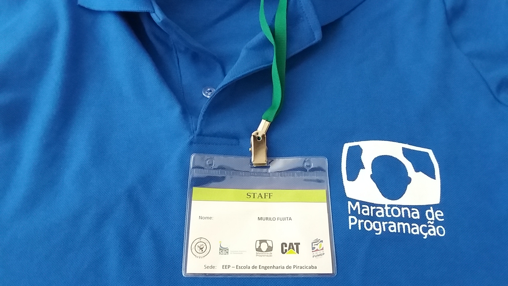
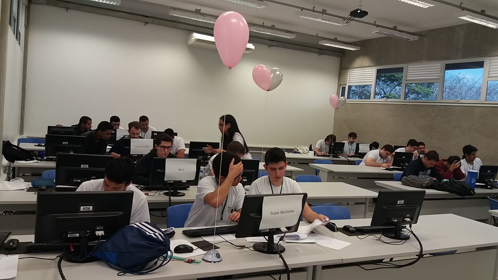
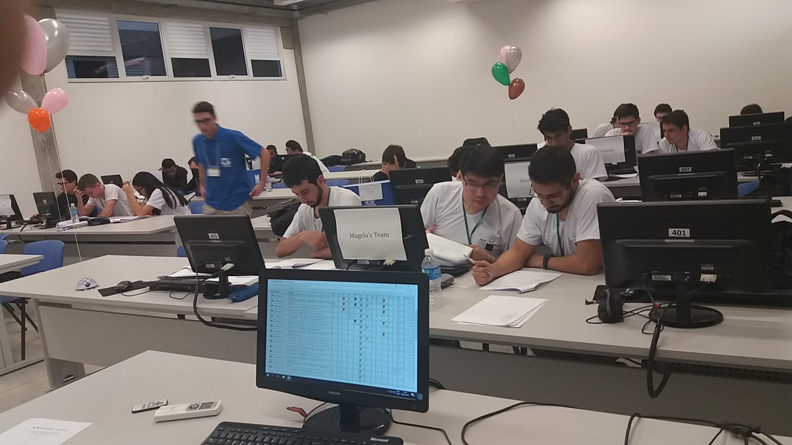
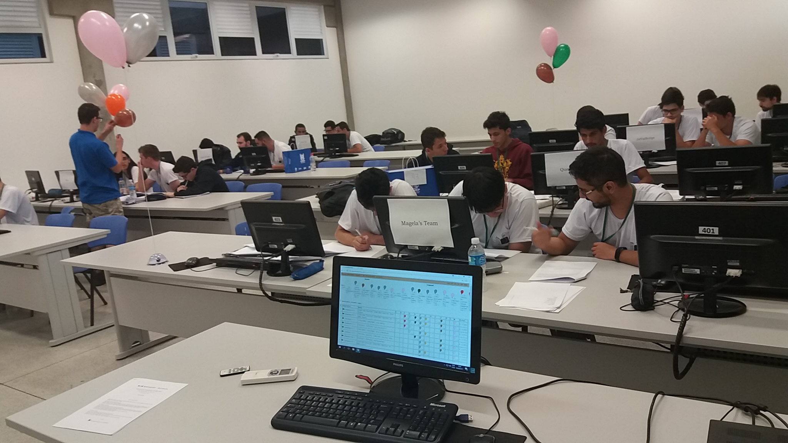
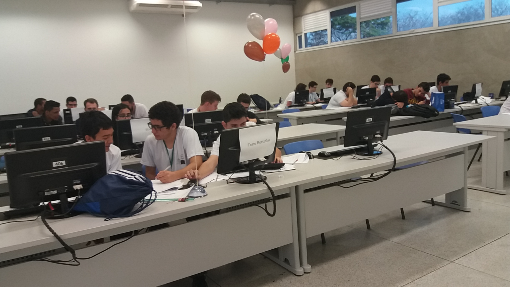
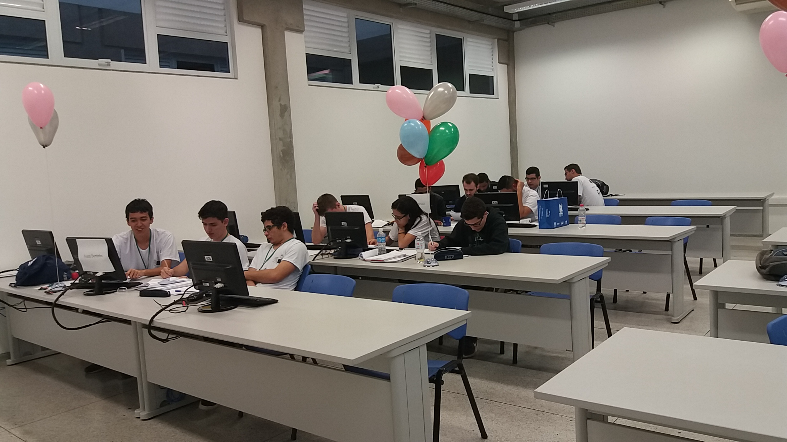
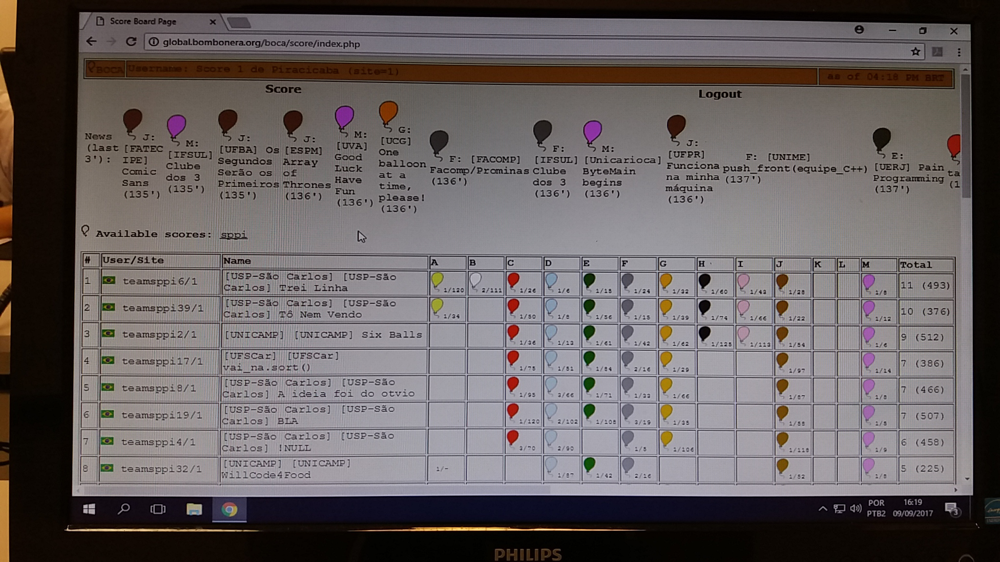
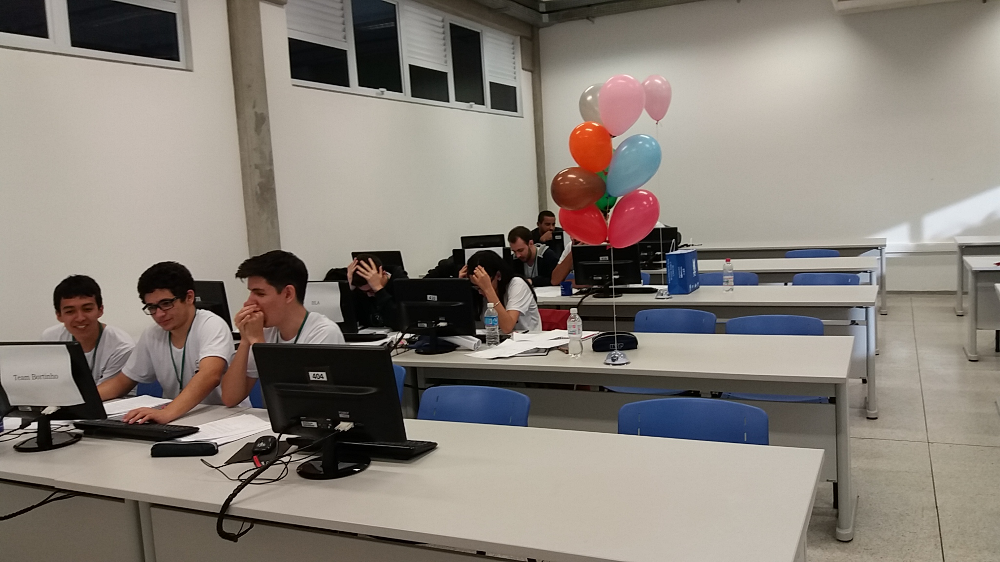
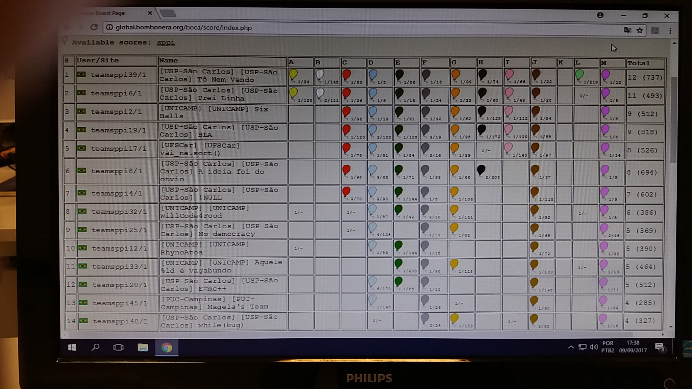

A equipe é composta por 3 elementos e somente 1 computador pode ficar ligado. A equipe submete o código, o servidor testa com uma massa de dados que tem deve devolver o processamento em um tempo aceitável. Se acertar, um balão é enchido com gás hélio, passa para a equipe de suporte que fica no corredor, entregue para o professor responsável da sala que prende a um barbante. São os troféus que ficam expostos na mesa da equipe.
Acredito que as equipes novatas ficam com medo quando vêem aqueles que estão com várias balões. Enfim, achei bem a situação bem nerd.
Na sala que fiscalizei estavam o 4°, 8° e 13°.
A próxima etapa é a final brasileira em Foz do Iguaçu dias 10 e 11 de novembro de 2017.








